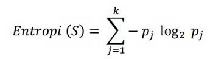
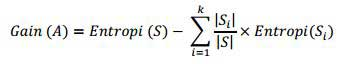
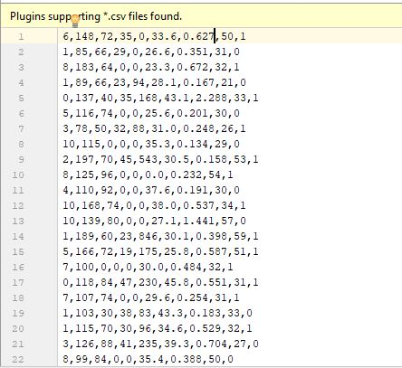

DECISION TREE¶
Algoritma ID3 merupakan algoritma yang dipergunakan untuk membangun sebuah decision tree atau pohon keputusan. Algoritma ini ditemukan oleh J. Ross Quinlan (1979), dengan memanfaatkan Teori Informasi atau Information Theory milik Shanon. ID3 sendiri merupakan singkatan dari Iterative Dichotomiser 3.
Decision tree menggunakan struktur hierarki untuk pembelajaran supervised. Proses dari decision tree dimulai dari root node hingga leaf node yang dilakukan secara rekursif. Di mana setiap percabangan menyatakan suatu kondisi yang harus dipenuhi dan pada setiap ujung pohon menyatakan kelas dari suatu data.
Proses dalam decision tree yaitu mengubah bentuk data (tabel) menjadi model pohon (tree) kemudian mengubah model pohon tersebut menjadi aturan (rule).
Dengan pendekatan ini, salah satu kelemahan algoritma dari decision tree, adalah faktor skalabilitas dimana algoritma tersebut hanya dapat digunakan untuk menangani sampel-sampel yang dapat disimpan secara keseluruhan dan pada waktu yang bersamaan di memori.
Algoritma ID3 tidak pernah melakukan backtracking untuk merevisi keputusan pemilihan attribute yang telah dilakukan sebelumnya. ID3 hanya menangani nilai-nilai attribute yang sedikit dan diskret, tetapi algoritma modifikasinya, algoritma C4.5 (1993), selanjutnya mampu menangani nilai attribute kontinu.
Kelebihan & Kekurangan Pohon Keputusan atau Decision Tree¶
Metode pohon keputusan mempunyai beberapa kelebihan, diantaranya sebagai berikut :
- Daerah pengambilan keputusan yang sebelumnya kompleks dan sangat global, dapat diubah menjadi simple dan spesifik.
- Eliminasi perhitungan-perhitungan yang tidak diperlukan, karena ketika menggunakan metode pohon keputusan maka contoh diuji hanya berdasarkan kriteria atau kelas-kelas tertentu.
- Fleksibel untuk memilih fitur dari internal node yang berbeda, fitur yang terpilih akan membedakan suatu kriteria dibandingkan kriteria yang lain dalam node yang sama.
- Metode pohon keputusan dapat menghindari munculnya permasalahan ini dengan menggunakan kriteria yang jumlahnya lebih sedikit pada setiap node internal tanpa banyak mengurangi kualitas keputusan yang dihasilkan.
Selain kelebihan dari pohon keputusan, terdapat juga beberapa kekurangan dari pohon keputusan, diantaranya sebagai berikut :
- Terjadi overlap terutama ketika kelas-kelas dan kriteria yang digunakan jumlahnya sangat banyak. Hal tersebut juga dapat menyebabkan meningkatnya waktu pengambilan keputusan dan jumlah memori yang diperlukan.
- Pengakumulasian jumlah eror dari setiap tingkat dalam sebuah pohon keputusan yang besar.
- Kesulitan dalam mendesain pohon keputusan yang optimal
- Hasil kualitas keputusan yang didapatkan dari metode pohon keputusan sangat tergantung pada bagaimana pohon tersebut didesain.
Arsitektur Pohon Keputusan¶
Arsitektur pohon keputusan dibuat menyerupai bentuk pohon, dimana pada umumnya sebuah pohon terdapat akar (root), cabang dan daun (leaf). Pada pohon keputusan juga terdiri dari tiga bagian sebagai berikut :
a. Root node atau node akar merupakan node yang terletak paling atas dari suatu pohon.
b. Internal Node ini merupakan node percabangan, dimana pada node ini hanya terdapat satu input dan mempunyai minimal dua output.
c. Leaf Node ini merupakan node akhir, hanya memiliki satu input, dan tidak memiliki output. Pada pohon keputusan setiap leaf node menandai label kelas.
Pada pohon keputusan di setiap percabangan menyatakan kondisi yang harus dipenuhi dan tiap ujung pohon menyatakan nilai kelas data. Gambar berikut merupakan bentuk arsitektur pohon keputusan.

Langkah-Langkah Konstruksi Pohon Keputusan dengan Algoritma ID3¶
Adapun langkah-langkah dalam konstruksi pohon keputusan adalah sebagai berikut :
Langkah 1 : Pohon dimulai dengan sebuah simpul yang mereperesentasikan sampel data pelatihan yaitu dengan membuat simpul akar.
Langkah 2 : Jika semua sampel berada dalam kelas yang sama, maka simpul ini menjadi daun dan dilabeli menjadi kelas. Jika tidak, information gain akan digunakan untuk memilih atribut terbaik dalam memisahkan data sampel menjadi kelas-kelas individu.
Langkah 3 : Cabang akan dibuat untuk setiap nilai pada atribut dan data sampel akan dipartisi lagi.
Langkah 4 : Algoritma ini menggunakan proses rekursif untuk membentuk pohon keputusan pada setiap data partisi. Jika sebuah atribut sduah digunakan disebuah simpul, maka atribut ini tidak akan digunakan lagi di simpul anak-anaknya.
Langkah 5 : Proses ini berhenti jika dicapai kondisi seperti berikut :
– Semua sampel pada simpul berada di dalam satu kelas
– Tidak ada atribut lainnya yang dapat digunakan untuk mempartisi sampel lebih lanjut. Dalam hal ini akan diterapkan suara terbanyak. Ini berarti mengubah sebuah simpul menjadi daun dan melabelinya dnegan kelas pada suara terbanyak.
Entropy & Information Gain¶
Algoritma pada metode ini menggunakan konsep dari entropi. Konsep Entropi yang digunakan untuk mengukur “seberapa informatifnya” sebuah node (yang biasanya disebut seberapa baiknya).
Entropi(S) = 0, jika semua contoh pada S berada dalam kelas yang sama. Entroiy(S) = 1, jika jumlah contoh positif dan jumlah contoh negatif dalam S adalah sama. 0 < Entropi(S) < 1, jika jumlah contoh positif dan negatif dalam S tidak sama.

Dimana: • S adalah himpunan (dataset) kasus • k adalah banyaknya partisi S • pj adalah probabilitas yang di dapat dari Sum(Ya) dibagi Total Kasus.
Setelah mendapat nilai entropi, pemilihan atribut dilakukan dengan nilai information gain terbesar.

Dimana: S = ruang (data) sample yang digunakan untuk training. A = atribut. |Si| = jumlah sample untuk nilai V. |S| = jumlah seluruh sample data. Entropi(Si) = entropy untuk sample-sample yang memiliki nilai i
Classification Tree ini menggunakan data :
pima-indians-diabetes.cvs (bisa di unduh : https://www.kaggle.com/uciml/pima-indians-diabetes-database).
Data tersebut jadikan satu folder dengan file pyCharm atau programnya.

Langkah 1 :
Sebelum menuliskan source code, kita harus menginstall library terlebih dahulu. Dalam implementasi Classification Tree, perlu library pandas dan scikit_learn. Cara menginstallnya, ketikan code dibawah ini kedalam command prompt :
pip install pandas
pip install scikit-learnLangkah 2 :
Setelah libary terpasang, saatnya kita mulai mengetikan programnya. Pertama adalah load libaries**atau impor, seperti pada **source code dibawah ini :
#load libaries
import pandas as pd
from sklearn import tree
from sklearn.tree import DecisionTreeClassifier #Import Decision Tree Classifier
from sklearn.model_selection import train_test_split #Import train_test_split function
from sklearn import metrics #Import scikit-learn metrics module for accuracy calculationMenjalankan library yang telah kita pasang atau install melalui command prompt. (langkah 1)
Import Decision Tree Classifier : Impor Klasifikasi Pohon Keputusan
Import train_test_split function : Impor fungsi train_test_split
Import scikit-learn metrics module for accuracy calculation : Import scikit-learn metrik untuk modul perhitungan akurasi
Langkah 3 :
Tahap selanjutnya adalah col_names , memberikan nama pada tabel di dalamdata :
col_names = ['pregnant', 'glucose', 'bp', 'skin', 'insulin', 'bmi', 'pedigree', 'age', 'label']Langkah 4 :
Memasuki langkah keempat adalah tahap load dataset (memuat database). Bisa ketikan **source code**seperti pada gambar dibawah ini :
# load dataset
pima = pd.read_csv("pima-indians-diabetes.csv", header=None, names=col_names)
pima.head()Langkah 5 :
Selanjutnya adalah Feature Selection (pemilihan fitur), tahap split dataset in features and target variable atau memisahkan dataset dalam fitur dan variabel target. Dengan source code seperti berikut :
#split dataset in features and target variable
feature_cols = ['pregnant', 'insulin', 'bmi', 'age','glucose','bp','pedigree']
X = pima[feature_cols] # Features
y = pima.label # Target variableLangkah 6 :
Tahap kelima adalah memasukan Split dataset into training set and test set yaitu memisahkan dataset dalam fitur dan variabel target. Tahap ini masih sama yaitu tahap Feature Selection :
# Split dataset into training set and test set
X_train, X_test, y_train, y_test = train_test_split(X, y, test_size=0.3, random_state=1) # 70% training and 30% test#70% training and 30% test : 70% data dari bill_authentication.csv adlah data training dan 30% dalah data tes
Langkah 7 :
Selanjutnya adalah tahap Create Decision Tree classifer object, yaitu tahap membuat objek classifier Desicion tree. Berikut adalah Source code nya :
# Create Decision Tree classifer object
clf_gini = DecisionTreeClassifier()**Langkah 8 : **
Tahap ketujuh adalah proses Train Decision Tree Classifer, dengan cara yang sama, memasukkan source code dibawah ini :
# Train Decision Tree Classifer
clf_gini = clf_gini.fit(X_train,y_train)Langkah 9 :
Kemudian tahap prediksi pada dataset yang diuji, atau biasa disebut dengan Predict the response for test dataset :
#Predict the response for test dataset
y_pred = clf_gini.predict(X_test)Langkah 10 :
Tahap terakhir adalah model accuracy. Dimana pada tahap ini dicek accuracy pada data tersebut :
# Model Accuracy, how often is the classifier correct?
print("Accuracy:",metrics.accuracy_score(y_test, y_pred));[ Hasil Implementasi ]
Dan berikut adalah hasil dari Algorithm Classification tree :
Accuracy: 0.6623376623376623
Process finished with exit code 0Jadi, accuracy dari Algorithm Classification tree dengan data : bill_authentication.csv adalah 6,6%. Sehingga dapat di ambil kesimpulan bahwa data accurasy tersebut standart.
Referensi :
Sumber: https://medium.com
Sumber : https://informatikalogi.com/